Para este juego vamos a necesitar a nuestro jugador con la cesta, la manzana roja y la amarilla, la bomba, la línea de tierra y el objeto para las vidas. Para la presentación y la pantalla de inicio, la estrella, el titulo del juego y el botón para empezar a jugar.
Utilizaremos tres escenarios, el de la presentación (intro), el del juego y el de "Game Over".
Para descargar los objetos necesarios para el juego, lo haremos desde este link. Es un archivo comprimido con 10 objetos, 3 escenarios y 4 sonidos. Lo descargaremos y lo descomprimimos en el directorio del alumno.
El juego consiste en que tenemos que ir recogiendo las manzanas que caen de los árboles. Las manzanas rojas
nos darán un punto y las doradas nos darán cinco puntos.
Tendremos tres vidas y cada vez que no podamos coger una manzana, nos quitará una vida. Cuidado con las
bombas, que si las cogemos también nos quitarán una vida.
El juego terminará cuando nos quedemos sin vidas, mostrando la puntuación final y el record del juego.
Lo primero que haremos será colocar escenario del juego y sobre él, el recolector con su cesta.
Posicionaremos los objetos en el centro y en la parte de abajo de la pantalla, la cesta encima del recolector.
Como son un poco pequeños los dos objetos, los agrandaremos hasta el 125% con el bloque "Fijar Tamaño Al".
Lo único que añadiremos a la cesta será un bucle para que siempre esté junto al recolector mediante el
bloque "Ir A", con lo que la cesta quedaría:
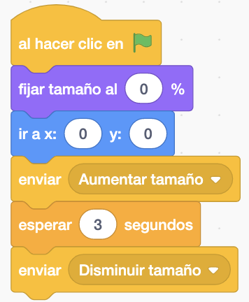
El recolector se moverá con las flechas izquierda y derecha, moviéndonos en el eje X. Esta vez, moveremos el objeto mediante las coordenadas con el bloque "Sumar A X" y no con el bloque "Mover Pasos".
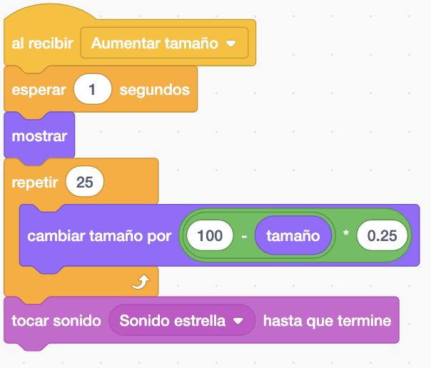
También haremos que el recolector cambie de disfraz al andar. Una forma de hacerlo es:

En este objeto también le daremos un valor inicial (inicializar) a las variables globales que vamos a necesitar a lo largo del juego. Necesitaremos una para las vidas y otra para los puntos.
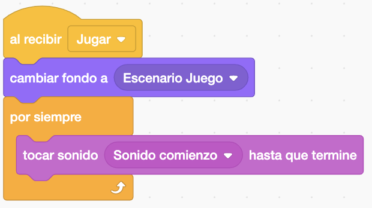
Ahora programaremos las manzanas, que serán clones. Irán saliendo de la parte superior pero en el eje x la posición será aleatoria para que puedan aparecer por cualquier lado. Irá bajando disminuyendo la coordenada "Y". Aparecerá una manzana cada segundo.
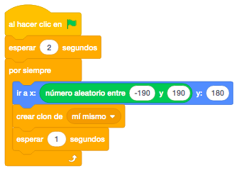
La manzana al caer irá girando poco a poco.
Pondremos en la parte inferior el objeto "Línea de Tierra" para que cuando toque este objeto, suene el
sonido "Sonido Fallo" y le quitará una vida. Al quitarle la vida enviaremos un mensaje "Quitar Vida" que
utilizaremos más adelante. Tendremos también que eliminar el clon en lugar de esconderlo.
Si la manzana toca la cesta, en lugar de quitarle una vida, le añadirá un punto y suene el sonido "Sonido
Coger Manzana". Acordarse de eliminar el clon en lugar de esconderlo.
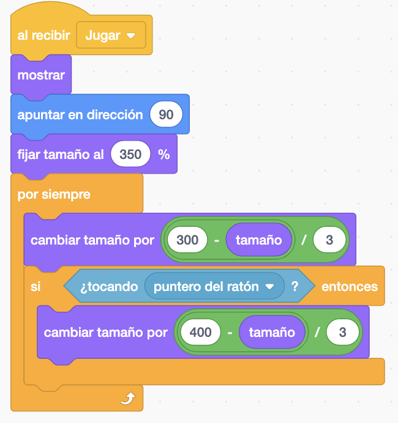
Es el turno de la manzana amarilla. Será igual que la manzana roja pero sumará mas puntos y aparecerá cada más tiempo.
En cuanto a la bomba, tiene dos disfraces, la propia bomba y la explosión. Aparecerán como las manzanas, en
forma de clones. En este caso, al tocar la línea de tierra sonará un sonido y se eliminará el clon.
Y si toca la cesta sonará la explosión y se terminará el juego. La forma más sencilla de que termine el
juego es quitarle todas las vidas. Aquí también enviaremos un mensaje "Game Over" que también utilizaremos
más adelante.
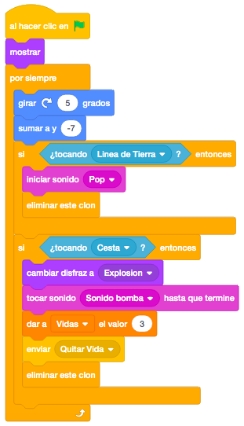
Ahora añadiremos el objeto que mostrará las vidas que nos quedan. Lo pondremos en la esquina superior
izquierda.
Lo primero que haremos será colocarlo en la pantalla y poner el disfraz con todas las vidas disponibles.
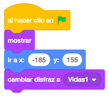
Ahora crearemos un "Al Recibir" y aquí es donde recibiremos el mensaje "Quitar Vida". En este mensaje, dependiendo del valor de la variable "Vida", le pondremos su disfraz correspondiente y si ya ha utilizado la última vida, terminaremos el juego. Para ello, enviaremos primero un mensaje "Eliminar Clones" para eliminar los clones que haya en ese momento en pantalla y lo recibirán todos los objetos que tengan clones (manzanas y bombas) y el envío de nuevo del mensaje "Game Over" que centralizará lo que hacemos cuando terminamos, ya sea porque se nos acaban las vidas o por que nos elimine la bomba. Luego explicaremos lo que codificaremos en este mensaje.
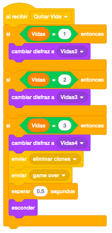
Ahora es cuando programaremos el mensaje "Game Over" y lo haremos dentro de nuestro jugador recolector de
manzanas.
Al terminarse el juego, cambiaremos el escenario al de "Game Over" y esconderemos todos los objetos. También
esconderemos la variable puntos, que ha estado visible durante el juego. En este punto, crearemos dos nuevas
variables "Score" y "HiScore".
La variable "Score" contendrá los puntos que hemos hecho en la partida y aparecerá junto al literal "Score"
del escenario. Antes de mostrarla, volcaremos el contenido de "Puntos" en ella.
La variable "HiScore" contendrá el record de puntos que vayamos teniendo. y aparecerá junto al literal
"Hi-Score" del escenario. Antes de mostrarla, volcaremos el contenido de "Puntos" en ella siempre y cuando
este valor sea mayor que nuestro record anterior.
Para terminar, detendremos el juego.
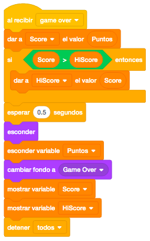
Ya tenemos prácticamente terminado el juego. Ahora vamos a ponerle una pantalla de inicio.
Comenzaremos poniendo el escenario Intro y colocamos el objeto "Estrella" en el centro. La pondremos muy
pequeña e iremos cambiando su tamaño hasta llegar al 100%. Pondremos un sonido y después la volveremos a
hacer pequeña. Al final enviaremos un mensaje de iniciar el juego ("Jugar") para que aparezca una nueva
pantalla para iniciar el juego.
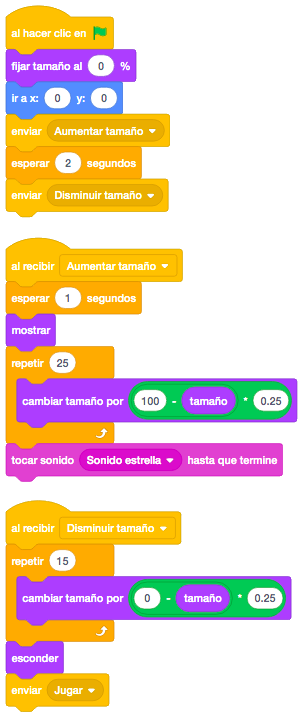
Crearemos un bloque "Al Recibir" del mensaje "Jugar". Ahora cambiaremos el escenario al del juego y tocaremos una música hasta que realmente se inicia el juego.
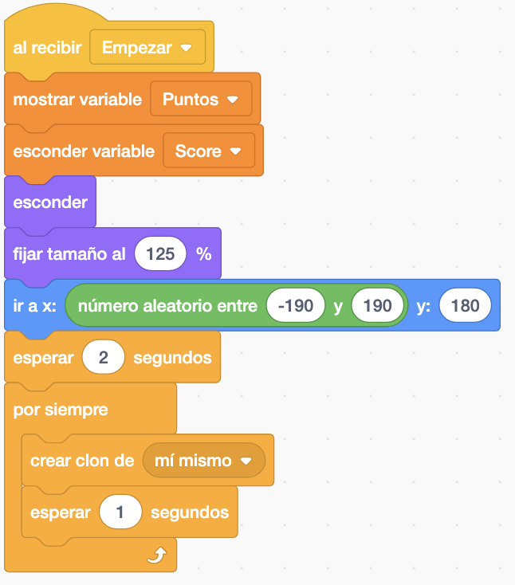
Finalmente programaremos los dos últimos objetos.
Primero mostraremos el objeto "Titulo Juego" y lo posicionaremos en el centro de la pantalla. Vamos a hacer
que el texto esté continuamente girando hacia un lado y otro
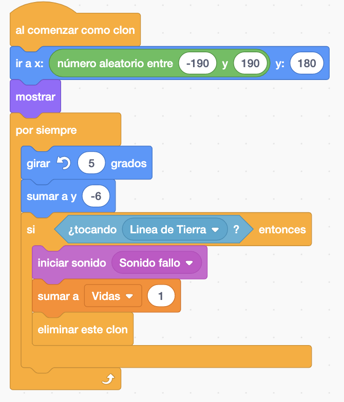
Ahora vamos a añadirle un nuevo efecto. Cuando pase el ratón por encima, lo haremos un poco más grande y cuando no pase el ratón lo dejaremos como estaba.
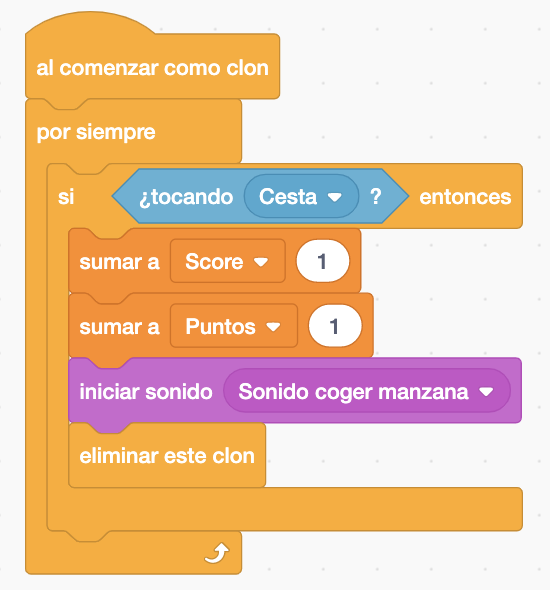
El último objeto que pondremos será el botón de inicio del juego. Posicionaremos el objeto y meteremos en un
bucle darle un tamaño y ver si estamos con el ratón por encima del objeto.
Si estamos encima, igual que en el título, lo haremos un poco más grande y cuando deje de estar encima lo
dejaremos como estaba.
Estando encima, controlamos si pinchamos en el botón. Si pinchamos, le quitamos brillo para darle un efecto
de pulsar en él, esperamos hasta que deje de estar presionado y paramos la música enviando un mensaje a la
estrella, que es donde iniciamos el sonido, y mandaremos un mensaje "Empezar" para dar inicio al juego.
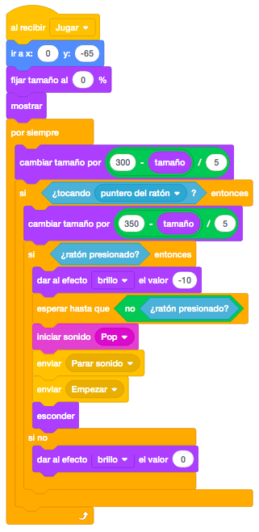
En la estrella programaremos lo siguiente para parar el sonido.
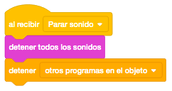
Lo último que nos queda es cambiar en los objetos que cuando empezamos a interactuar con ellos, en lugar de ponerlos bajo el bloque de control "Al Hacer Click En La Bandera" ponerlos bajo un "Recibir Mensaje Empezar".
Podemos añadirle lo que se nos ocurra, por ejemplo, que las manzanas vayan bajando cada vez más rápido y cualquier cosa que se nos ocurra.
Y el juego quedaría así.
Para ver el juego terminado pulsa
aquí.
Para descargarte el juego terminado pulsa
aquí.